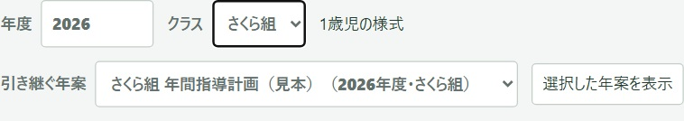
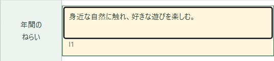
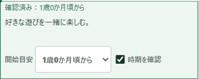
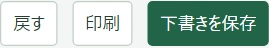
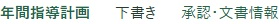
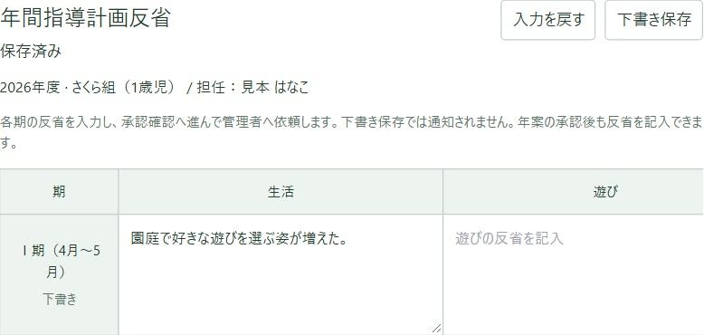
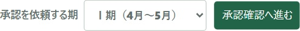

年案を引き継いで書く
1年間の計画を作ります。園にある年案を開き、今年のクラスに合わせて書き直します。見本はさくら組の1歳児です。
写真は架空のクラスの画面です。押すと大きく見られます。
1年度とクラスを選ぶ
職員メニューで「指導計画」を開きます。「自園の帳票」の「年案」を押します。
「年度」と「クラス」を確かめます。帳票が出ていないときは、「引き継ぐ年案」から使いたい年案を選び、「選択した年案を表示」を押します。すでに今年の帳票が出ていれば、そのまま次に進めます。

使いたい年案が選べないときは、クラスと年度をもう一度見てください。「取り込み元が未登録です」と出たら、園の管理者に伝えましょう。
2今年のねらいを書く
表の上でクラスと担任名を確かめます。「年間のねらい」の文章を押して、今年の子どもたちに合わせて書き直します。各期の計画も、直したい欄に直接書けます。
開始時期が「推定」と出る欄では、その表示を押します。元の年案と照らして「開始目安」を選び、「時期を確認」にチェックを入れます。


3下書きを保存して、続きを開く
年案の上にある「下書きを保存」を押します。保存した年案には「下書き」と表示されます。
続きを書くときは「指導計画」から「年案」を開き、同じ年度とクラスを選びます。前に書いた文章が出ていることを確かめます。


4あとから各期の反省を書く
年案の「年間指導計画反省へ」を押し、振り返りたい期の欄に書きます。反省欄の「下書き保存」を押します。
管理者に見てもらうときは「承認を依頼する期」を選び、「承認確認へ進む」を押して依頼内容を確かめます。下書きの段階で自分の作業を終えることもできます。

